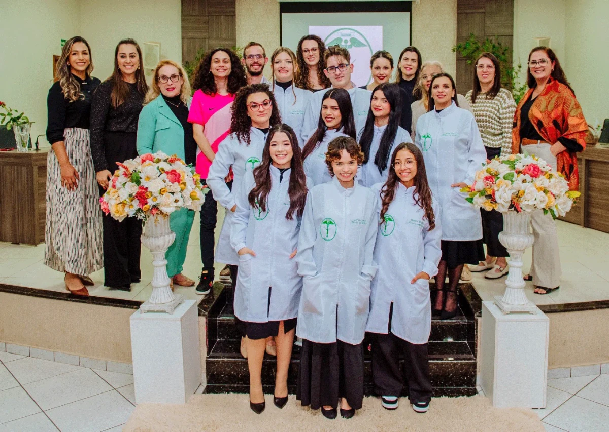

O Curso Técnico em Estética do Colégio Estadual Barbosa Ferraz é voltado para a formação de profissionais qualificados na área da beleza e bem-estar, com sólida base técnica e ética.
Com foco em cuidados com a pele, procedimentos estéticos, massagens e autoestima, os alunos saem preparados para transformar vidas com técnica, responsabilidade e criatividade.
